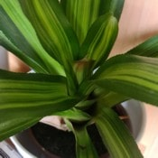
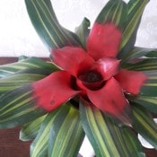
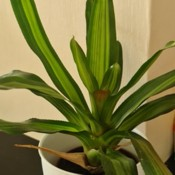
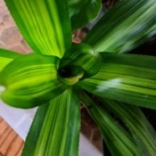

Nom
Exposition en été
Exposition en hiver
Arrosage en été
Arrosage en hiver
Rempotage
Neoregelia carolinae tricolorVoir la galerie photo




Je la mets là ou elle reçoit une bonne lumière sans être trop lumineuse non plus.
Dehors je la mets ou elle ne recevra pas de soleil et sous de plus grandes plantes et aura une lumière moins forte suite à l'ombre faite par les autres.
Je la garde dans une pièce moyennement chauffée recevant une bonne lumière.
Je l'arrose régulièrement et de façon modérée afin que le substrat reste toujours humide.
J'arrose toujours à partir de la rosette en veillant à ce qu'elle contienne toujours de l'eau.
À besoin d'une bonne humidité ambiante.
J'espace un peu plus les arrosages mais je veille à ce que le substrat ne sèche jamais et à ce que la rosette contienne toujours de l'eau.
Je la place également à bonne distance du chauffage.
Je mélange un bon terreau universel avec de la fibre de coco.
Je la trouve bien dans un pot en plastique de taille moyenne ainsi, les rejets ont de la place.